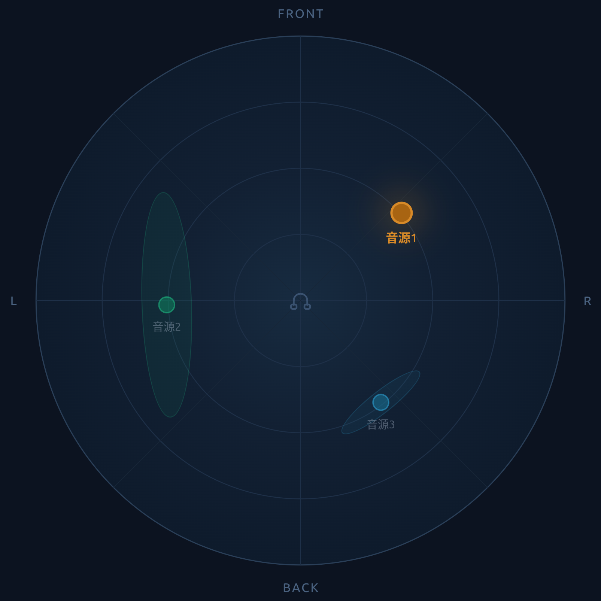
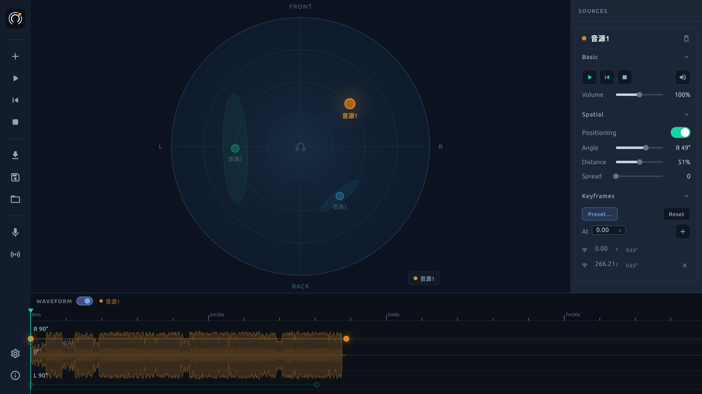
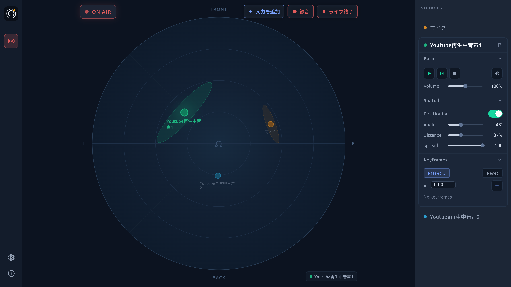
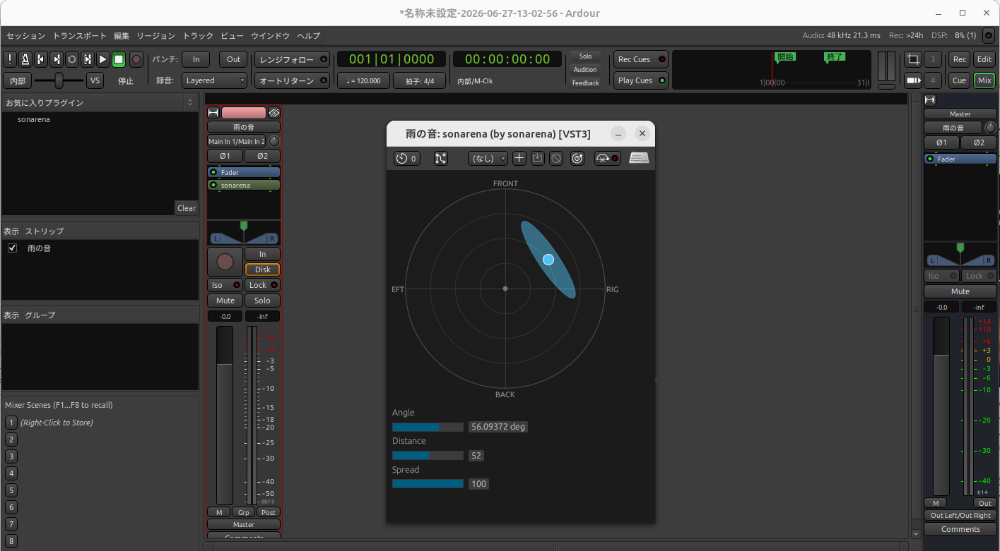

個人開発・空間音響ツール
音源を置いて、広げて、動かす。
音楽・ASMR・環境音・実況などに。
デスクトップアプリ版 / DAWプラグイン版
sonarena は、音を「左右」だけでなく 前後・距離・広がり まで自由に配置して、立体的な音響を作れる空間音響ツールです。 画面の上に音を置くだけで位置が決まり、時間に沿って動かすこともできます。 作った音はそのまま書き出せるので、動画や作品に使えます。
単体で使えるデスクトップアプリ版と、お使いのDAWに挿せるプラグイン版があります。

単体アプリには、使う音に合わせて2つのモードがあります。
▸ studioモード：用意した音を配置・再生

▸ liveモード：音を取り込みながら配置・受聴

CLAP / VST3 に対応。お使いのDAWの中で、そのまま空間配置できます。

画面に音を置くだけで、左右・前後・距離が決まります。
「この時間にこの位置」を記録すれば、音が動く・回る・通り過ぎる。
一点から鳴らすか、空間に広げるか。音の広がり方を変えられます。
置いた通りに、前後や距離まで感じられます。
作った空間音響を書き出して、動画や作品にそのまま使えます。
いくつもの音をそれぞれ別の位置に置いて、ひとつの空間にまとめられます。
ヘッドホンでの視聴を推奨します。
複数の音を空間内で移動させる
音の広がりを変化させる
Windows / macOS / Linux
デスクトップアプリ版
DAWプラグイン版（CLAP / VST3）
ヘッドホンでの視聴